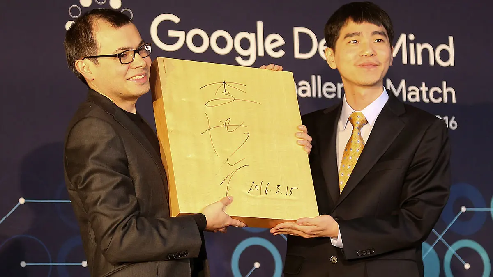

Overview
Go is known as the most challenging classical game for artificial intelligence because of its complexity. Despite decades of work, the strongest Go computer programs could only play at the level of human amateurs. Standard AI methods, which test all possible moves and positions using a search tree, can’t handle the sheer number of possible Go moves or evaluate the strength of each possible board position.
What is Go?
Go originated in China over 3,000 years ago. Winning this board game requires multiple layers of strategic thinking.
Two players, using either white or black stones, take turns placing their stones on a board. The goal is to surround and capture their opponent's stones or strategically create spaces of territory. Once all possible moves have been played, both the stones on the board and the empty points are tallied. The highest number wins.
As simple as the rules may seem, Go is profoundly complex. There are an astonishing 10 to the power of 170 possible board configurations - more than the number of atoms in the known universe. This makes the game of Go a googol times more complex than chess.

AlphaGo Approach
To capture the intuitive aspect of the game, we needed a new approach.
We created AlphaGo, a computer program that combines advanced search tree with deep neural networks. These neural networks take a description of the Go board as an input and process it through a number of different network layers containing millions of neuron-like connections.
One neural network, the “policy network”, selects the next move to play. The other neural network, the “value network”, predicts the winner of the game. We introduced AlphaGo to numerous amateur games to help it develop an understanding of reasonable human play. Then we had it play against different versions of itself thousands of times, each time learning from its mistakes.
Over time, AlphaGo improved and became increasingly stronger and better at learning and decision-making. This process is known as reinforcement learning. AlphaGo went on to defeat Go world champions in different global arenas and arguably became the greatest Go player of all time.
Matches & Events
In October 2015, AlphaGo played its first match against the reigning three-time European Champion, Mr Fan Hui. AlphaGo won the first ever game against a Go professional with a score of 5-0.
AlphaGo then competed against legendary Go player Mr Lee Sedol, the winner of 18 world titles, who is widely considered the greatest player of the past decade. AlphaGo's 4-1 victory in Seoul, South Korea, on March 2016 was watched by over 200 million people worldwide. This landmark achievement was a decade ahead of its time.
In January 2017, we revealed an improved, online version of AlphaGo called Master. This online player achieved 60 straight wins in time-control games against top international players.
Four months later, AlphaGo took part in the Future of Go Summit in China, the birthplace of Go. The five-day festival created an opportunity to explore the mysteries of Go in a spirit of mutual collaboration with the country’s top players. Designed to help unearth even more strategic moves, the summit included various game formats such as pair Go, team Go, and a match with the world’s number one player Ke Jie.
